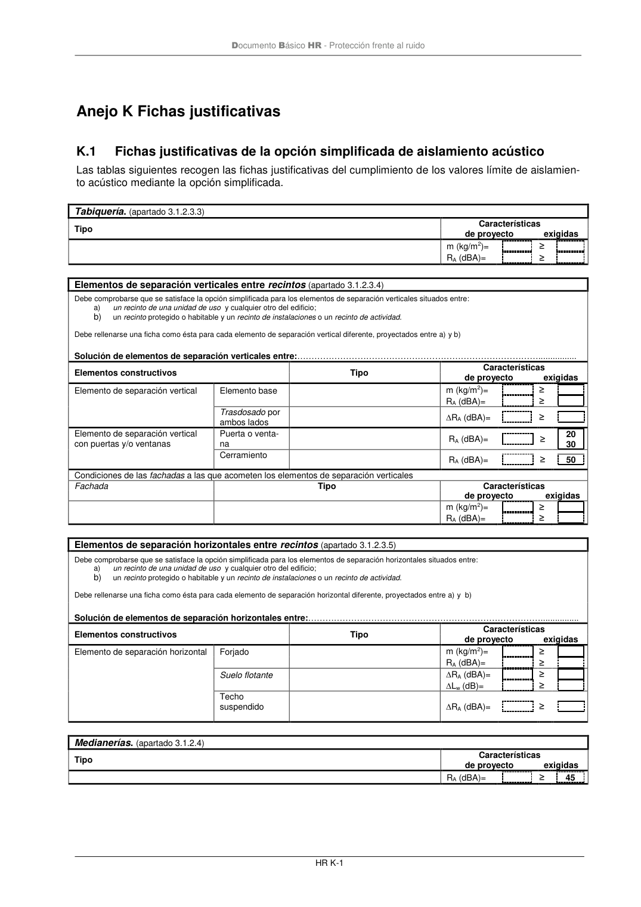
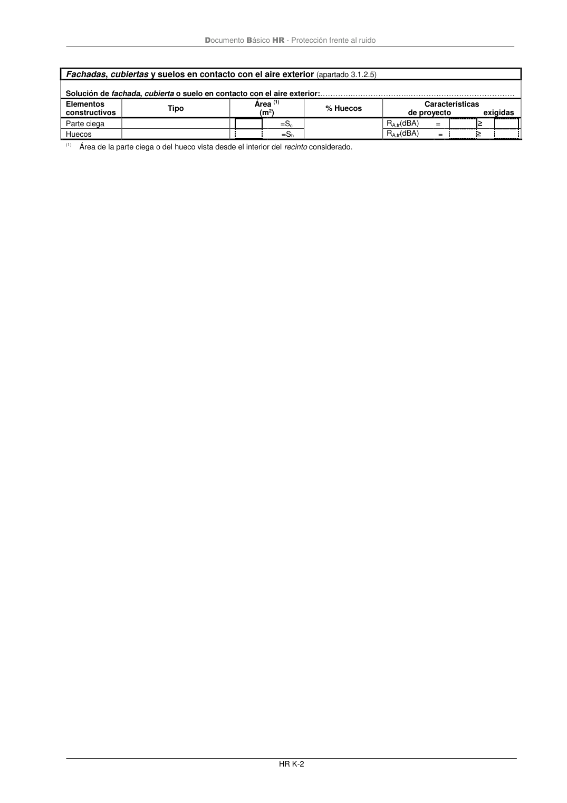

DB-HR Protección frente al ruido · edición 2019-12-20 · capa oficial
Documento DB-HR-oficial · SHA-256 del PDF a67baeca5138bb1f121f797d23a79a4557bd9ac4abacd954024893e05411eeab
Copia fiel del PDF fuente · Fuente oficial
Ficha de la disposición en la fuente oficial
Formatos: JSON del segmento · Markdown
Fichas justificativas de la opción simplificada de aislamiento acústico Las tablas siguientes recogen las fichas justificativas del cumplimiento de los valores límite de aislamien- to acústico mediante la opción simplificada. Tabiquería. (apartado 3.1.2.3.3) Tipo Características de proyecto exigidas m (kg/m2)= ≥ RA (dBA)= ≥ Elementos de separación verticales entre recintos(apartado 3.1.2.3.4) Debe comprobarse que se satisface la opción simplificada para los elementos de separación verticales situados entre: a) un recinto de una unidad de uso y cualquier otro del edificio; b) un recinto protegido o habitable y un recinto de instalaciones o un recinto de actividad. Debe rellenarse una ficha como ésta para cada elemento de separación vertical diferente, proyectados entre a) y b) Solución de elementos de separación verticales entre:…………………………………………………………………………................ Elementos constructivos Tipo Características de proyecto exigidas Elemento de separación vertical Elemento base m (kg/m2)= ≥ RA (dBA)= ≥ Trasdosado por ambos lados RA (dBA)= ≥ Elemento de separación vertical con puertas y/o ventanas Puerta o venta- na RA (dBA)= ≥ 20 30 Cerramiento RA (dBA)= ≥ 50 Condiciones de las fachadas a las que acometen los elementos de separación verticales Fachada Tipo Características de proyecto exigidas m (kg/m2)= ≥ RA (dBA)= ≥ Elementos de separación horizontales entre recintos(apartado 3.1.2.3.5) Debe comprobarse que se satisface la opción simplificada para los elementos de separación horizontales situados entre: a) un recinto de una unidad de uso y cualquier otro del edificio; b) un recinto protegido o habitable y un recinto de instalaciones o un recinto de actividad. Debe rellenarse una ficha como ésta para cada elemento de separación horizontal diferente, proyectados entre a) y b) Solución de elementos de separación horizontales entre:………………………………………………………………………................ Elementos constructivos Tipo Características de proyecto exigidas Elemento de separación horizontal Forjado m (kg/m2)= ≥ RA (dBA)= ≥ Suelo flotante RA (dBA)= ≥ Lw (dB)= ≥ Techo suspendido RA (dBA)= ≥ Medianerías. (apartado 3.1.2.4) Tipo Características de proyecto exigidas RA (dBA)= ≥ 45 Documento Básico HR - Protección frente al ruido HR K-2 Fachadas, cubiertas y suelos en contacto con el aire exterior (apartado 3.1.2.5) Solución de fachada, cubierta o suelo en contacto con el aire exterior:………….………………….…………………………………… Elementos constructivos Tipo Área (1) (m2) % Huecos Características de proyecto exigidas Parte ciega =Sc RA,tr(dBA) = ≥ Huecos =Sh RA,tr(dBA) = ≥ (1) Área de la parte ciega o del hueco vista desde el interior del recinto considerado. Documento Básico HR - Protección frente al ruido HR K-3

